Le blog n'est pas un bonus
Je ne crée pas un blog pour remplir un menu. Je crée un endroit où mon système peut publier des contenus utiles, tester des sujets, pousser mes offres et construire de l'autorité. Si mon site RestIA explique ce que je vends, le blog explique pourquoi mes solutions ont du sens.
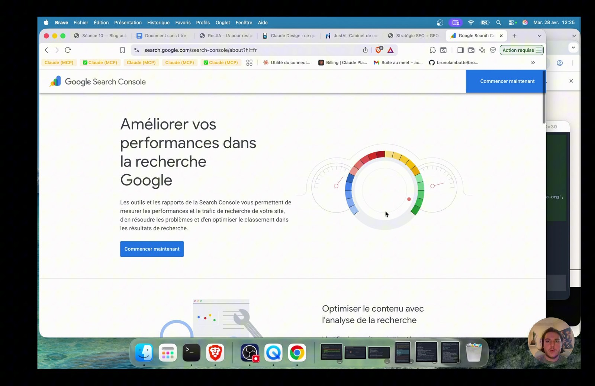
Le point de départ : mon-business
Je garde le même dossier de travail que dans les séances précédentes. Le dossier mon-business évite de mélanger les fichiers de marque, de marché, de site, de blog, de prospection et de clients. Pour cette séance je pars de 02-site, parce que le blog se construit dans le WordPress déjà en place.
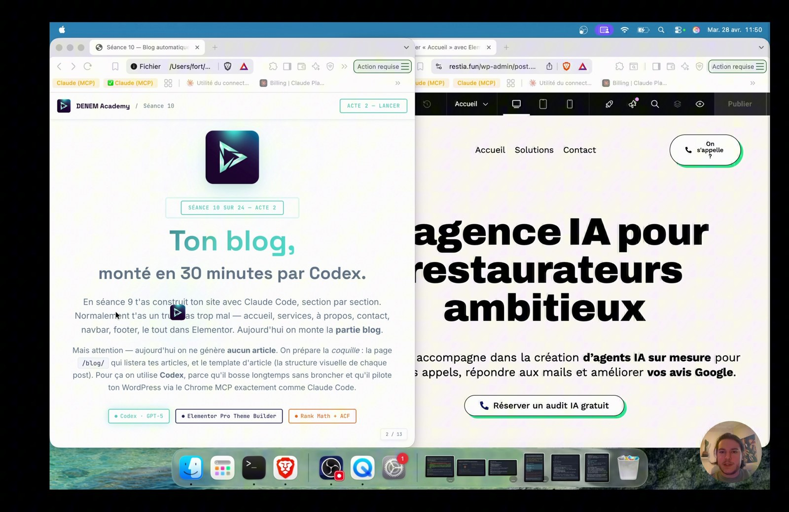
Je vérifie l'écran réel avant de passer à la suite.
Je peux expliquer ce que je vois et pourquoi je l'utilise.
Pourquoi je travaille dans 02-site
Le blog n'est pas séparé du site. Il doit reprendre la charte, la navbar, le footer, les couleurs et les boutons déjà créés. Si je lançais Codex dans un autre dossier, il perdrait une partie du contexte et il pourrait produire un blog qui ne ressemble pas au reste.
- Je prépare le contexte.
- Je lance une action courte.
- Je vérifie dans l'interface réelle.
- Je corrige uniquement ce qui bloque.
Ce que je veux à la fin
Je veux trois choses simples : une page /blog/ qui liste les articles, un template d'article qui affiche chaque contenu proprement, et une méthode pour publier sans refaire le design à chaque fois. Une fois le système prêt, chaque nouvel article doit tomber dans la bonne structure tout seul.
Je clarifie l'entrée de travail.
Je transforme l'idée en bloc exploitable.
Je regarde le résultat dans l'outil réel.
Ce n'est pas une séance WordPress classique. La vraie compétence, c'est de savoir donner une mission complète à un agent : contexte, accès, structure attendue, preuves de réussite, pièges à éviter. Codex ne doit pas deviner. Je le guide comme un exécutant technique.
La logique IA derrière la séance
Je garde cette idée en tête pendant toute la séance : un blog utile se construit avec une méthode, pas avec une succession de clics.
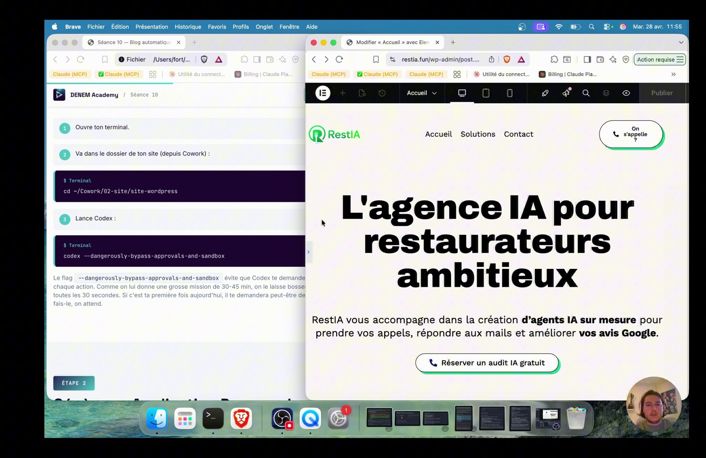
Je ne cherche pas à tout automatiser tout de suite
Avant de publier 100 articles automatiquement, je vérifie que le blog peut recevoir un seul article correctement. C'est le bon ordre. D'abord la coquille. Ensuite le contenu. Ensuite l'automatisation.
Une demande floue, un site qui peut casser, et un agent qui improvise.
Un chemin clair : contexte, prompt, exécution, contrôle, correction.
Le fil rouge RestIA
Je garde le même exemple : RestIA, un site pour aider les restaurants avec l'IA. Le blog doit servir ce business. Les articles ne doivent pas être génériques. Ils doivent parler d'appels manqués, de réservations, d'avis clients, de menus, de service, de visibilité et d'automatisations utiles.
- Je prépare le contexte.
- Je lance une action courte.
- Je vérifie dans l'interface réelle.
- Je corrige uniquement ce qui bloque.
Ce que tu vas refaire
Tu vas ouvrir ton projet, lancer Codex dans le bon dossier, le connecter à WordPress, lui donner un prompt précis, vérifier les pages créées, tester un article, régler les catégories, puis publier proprement. Chaque étape a une preuve observable.
Préparer le dossier avant Codex
Avant de demander quoi que ce soit, je vérifie que je suis dans le dossier du site. Si je travaille dans le mauvais dossier, Codex peut créer des rapports, des fichiers ou des notes au mauvais endroit. Ce n'est pas grave, mais ça rend la suite confuse.
- Je prépare le contexte.
- Je lance une action courte.
- Je vérifie dans l'interface réelle.
- Je corrige uniquement ce qui bloque.
Lancer Codex dans le bon contexte
Dans la séance, je lance Codex en mode terminal depuis le dossier 02-site. Le but est qu'il comprenne l'environnement local et qu'il puisse écrire ses fichiers de rapport au même endroit que le projet.
Il transforme une intention vague en tâche contrôlable. Tu peux le copier, remplacer les variables, puis vérifier le résultat.
connecte toi a mon site stp en mcp https://restia.fun/wp-admin/post.php?post=254&action=elementorCe que Codex voit au lancement
Codex affiche le modèle, le dossier courant et les permissions. Je vérifie ces trois lignes. Si le dossier n'est pas le bon, je coupe et je relance. C'est plus propre que de corriger après.
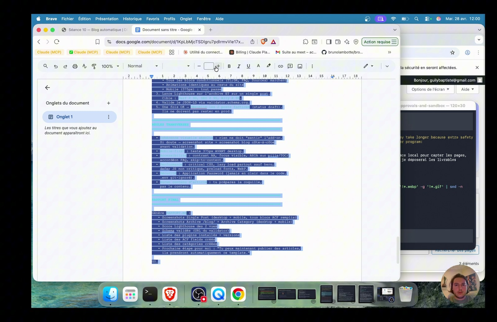
Je vérifie l'écran réel avant de passer à la suite.
Je peux expliquer ce que je vois et pourquoi je l'utilise.
Le mode YOLO demande de la responsabilité
Quand j'autorise Codex à travailler sans me demander chaque permission, je gagne du temps. Mais je dois être sûr du dossier et de la mission. Ce mode est utile dans un projet de confiance, pas dans un dossier rempli de fichiers sensibles.
Si tu vas trop vite ici, tu gagnes dix minutes maintenant et tu en perds une heure plus tard. Reviens toujours à une preuve simple.
La connexion MCP vers WordPress
Je donne l'URL WordPress à Codex pour qu'il puisse ouvrir le site via le navigateur. Le MCP sert à piloter Chrome : ouvrir une page, cliquer, lire l'interface, récupérer un snapshot et vérifier visuellement.
- Je prépare le contexte.
- Je lance une action courte.
- Je vérifie dans l'interface réelle.
- Je corrige uniquement ce qui bloque.
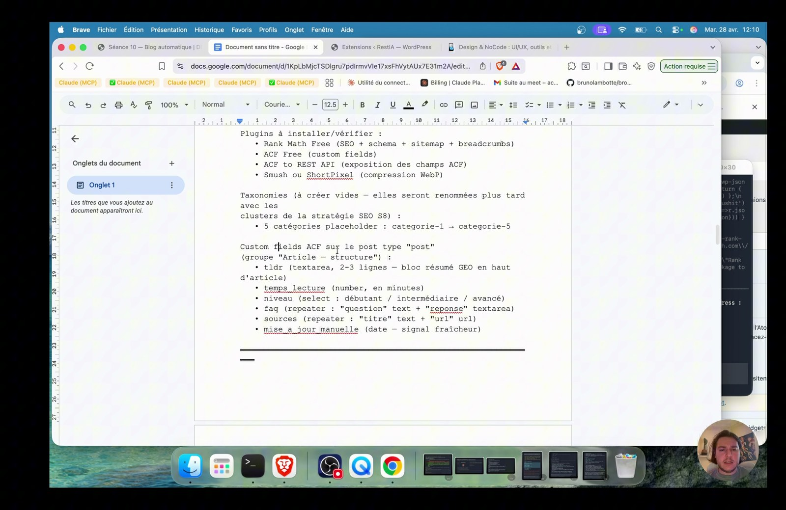
Pourquoi je donne une URL précise
Je ne dis pas seulement : connecte-toi à mon site. Je donne une URL exacte. Dans la capture, l'URL pointe vers l'éditeur Elementor d'une page. Codex gagne du temps parce qu'il arrive directement au bon endroit.
Si cette étape bloque, demande-toi : suis-je dans le bon dossier ? la bonne page ? le bon statut WordPress ? le bon écran public ?
Première preuve : WordPress répond
La première preuve n'est pas que Codex écrit beaucoup de texte. La preuve, c'est que WordPress s'ouvre, que la session est active, et que la page ou l'admin est visible.
Je vérifie l'écran réel avant de passer à la suite.
Je peux expliquer ce que je vois et pourquoi je l'utilise.
Je garde mes accès sous contrôle
Si une connexion est nécessaire, je peux la faire moi-même. Codex n'a pas besoin de voir mes mots de passe. Une fois connecté, il peut travailler dans la session active.
Si tu vas trop vite ici, tu gagnes dix minutes maintenant et tu en perds une heure plus tard. Reviens toujours à une preuve simple.
Le prompt de construction doit être concret
Je ne demande pas : fais-moi un blog. Je décris exactement l'archive, les filtres, les cartes, la pagination, la sidebar et l'état vide. Plus le prompt est précis, moins Codex invente.
Il transforme une intention vague en tâche contrôlable. Tu peux le copier, remplacer les variables, puis vérifier le résultat.
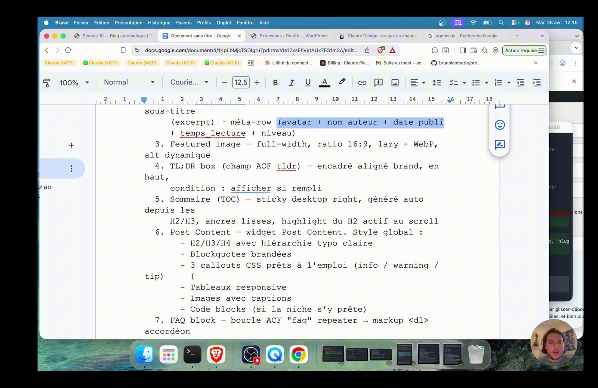
Tu es un lead developer WordPress + Elementor Pro et un expert SEO/GEO.
Tu as acces au Chrome MCP. Utilise-le pour regarder mon site et verifier le rendu.
Contexte :
J'ai deja construit mon site RestIA en Elementor : accueil, solutions, contact, header et footer.
Maintenant je veux monter la partie blog.
Attention : je ne veux pas encore produire des dizaines d'articles.
Je veux preparer la structure propre qui va recevoir les articles ensuite.
Mission :
1. Creer la page archive /blog/.
2. Creer le template Single Post pour tous les articles.
3. Installer ou verifier les bons plugins.
4. Creer les categories et les champs ACF.
5. Tester avec des articles factices, puis remettre les tests en brouillon.
Travaille en 5 phases.
Avant chaque phase, ecris ce que tu vas faire.
Apres chaque phase, ecris ce que tu as produit et ce que tu as appris.
PHASE 1 - Discovery
- Crawle la home, les pages principales, le header et le footer.
- Extrais la palette, les typos, les espacements, les bordures, les radius, les ombres, les animations et le ton.
- Note les composants Elementor deja presents.
- Cree discovery.md, design-tokens.json et seo-stack.md.
PHASE 2 - Prerequis WordPress
- Verifie ou installe Rank Math Free.
- Verifie ou installe ACF Free.
- Verifie ou installe ACF to REST API.
- Verifie ou installe Smush ou un plugin de compression image.
- Cree des categories propres selon le secteur. Ne cree pas categorie-1, categorie-2, etc.
- Cree des tags utiles : Agent IA, Automatisation, News IA.
- Cree les champs article :
- en_resume
- temps_lecture
- niveau
- faq
- sources
- mise_a_jour_manuelle
PHASE 3 - Template Single Post
Construis dans Elementor Theme Builder -> Single Post.
Condition : tous les posts.
Structure :
1. Breadcrumb.
2. Hero post avec tag categorie, H1, extrait, avatar, auteur, date, temps de lecture, niveau.
3. Image mise en avant en 16:9.
4. Bloc en_resume si le champ est rempli.
5. Sommaire sticky sur desktop.
6. Contenu article avec H2, H3, callouts, tableaux responsive, images et captions.
7. FAQ si le champ est rempli.
8. Sources si le champ est rempli.
9. Bloc auteur.
10. CTA contextualise.
11. Articles lies.
12. Partage LinkedIn, X et copier le lien.
13. Pas de commentaires.
PHASE 4 - Archive /blog/
Construis dans Elementor Theme Builder -> Archive.
Condition : Posts Archive.
Structure :
1. Hero archive compact avec H1, baseline et recherche.
2. Article epingle optionnel.
3. Filtres categories en pills.
4. Grid articles : 3 colonnes desktop, 2 tablette, 1 mobile.
5. Card avec image 4:3, categorie, titre 2 lignes max, extrait 2 lignes max, date et temps de lecture.
6. Pagination numerotee, pas de load more.
7. Sidebar : newsletter, articles recents, tags.
8. Etat vide propre si aucun article n'est publie.
PHASE 5 - Verification
- Cree 2 posts factices avec image, categorie et champs remplis.
- Verifie /blog/.
- Clique sur un article et verifie le template.
- Verifie mobile 375px.
- Verifie Lighthouse sur archive et single post.
- Verifie le schema si possible.
- Remets les posts factices en brouillon.
Rapport final :
Cree RAPPORT.md avec les plugins, les champs, les categories, les captures, les scores, les corrections et la prochaine etape.
GO.L'archive /blog/ sert de hub
La page /blog/ est la porte d'entrée du contenu. Elle doit être simple : un titre, une recherche, des catégories, une grille d'articles, une pagination. L'utilisateur doit comprendre où cliquer en moins de cinq secondes.
- Je prépare le contexte.
- Je lance une action courte.
- Je vérifie dans l'interface réelle.
- Je corrige uniquement ce qui bloque.
Le rôle de l'article épinglé
L'article épinglé n'est pas obligatoire. Il sert à mettre en avant un contenu fort : un guide, une étude, un audit, une offre de lead magnet. Si tu n'as rien d'important, tu laisses l'état vide propre.
Je clarifie l'entrée de travail.
Je transforme l'idée en bloc exploitable.
Je regarde le résultat dans l'outil réel.
Les filtres catégories
Les catégories doivent aider à naviguer. Sur RestIA, je peux avoir Guides, Cas d'usage, Actualités IA, Automatisation, Restaurant. Ce ne sont pas des catégories décoratives : elles aident le lecteur à trouver ce qui l'intéresse.
| Élément | Pourquoi je le garde | Comment tu vérifies |
|---|---|---|
| Structure | Elle évite que l'IA parte dans tous les sens. | Le résultat suit l'ordre prévu. |
| Business | Le blog doit servir le site, pas faire joli. | Chaque bloc mène vers une action utile. |
| Contrôle | Sans preuve, je ne valide pas. | Je regarde le site public et l'admin. |
Pourquoi pas categorie-1
Une catégorie nommée categorie-1 ne parle à personne. Si Codex crée ce genre de nom, je corrige. Un blog professionnel utilise des catégories lisibles, même si le contenu est encore vide.
Si tu vas trop vite ici, tu gagnes dix minutes maintenant et tu en perds une heure plus tard. Reviens toujours à une preuve simple.
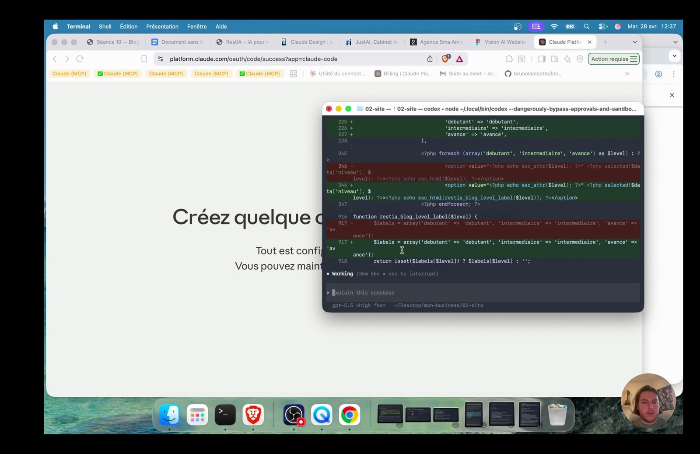
La grille d'articles
La grille doit être régulière. Une card trop haute casse le rythme. Je demande donc une image en ratio fixe, un titre limité à deux lignes, un extrait limité, et un footer stable avec date et temps de lecture.
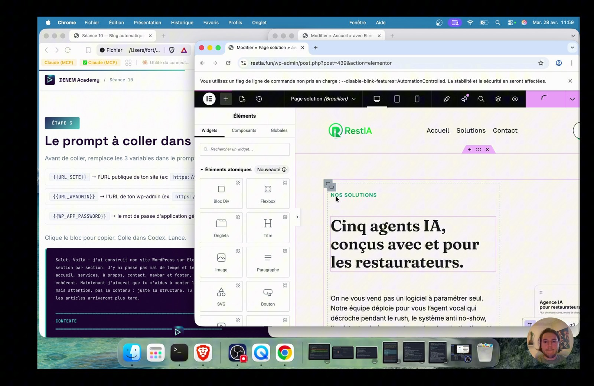
Je vérifie l'écran réel avant de passer à la suite.
Je peux expliquer ce que je vois et pourquoi je l'utilise.
Le mobile compte dès maintenant
Le blog peut être joli sur desktop et cassé sur mobile. Je vérifie vite : 375px, une colonne, aucun texte qui déborde, pas de sidebar trop large, pas de bouton coupé.
Au début il n'y a pas forcément d'article publié. Une page vide peut faire amateur. Je veux un message propre : Bientôt - premiers articles en préparation. C'est mieux qu'une grille cassée ou une page blanche.
L'état vide est important
Je garde cette idée en tête pendant toute la séance : un blog utile se construit avec une méthode, pas avec une succession de clics.
Le template Single Post
Un article WordPress ne doit pas dépendre d'une mise en page faite à la main à chaque fois. Le Single Post template donne une structure automatique : titre, image, contenu, sommaire, FAQ, sources, CTA.
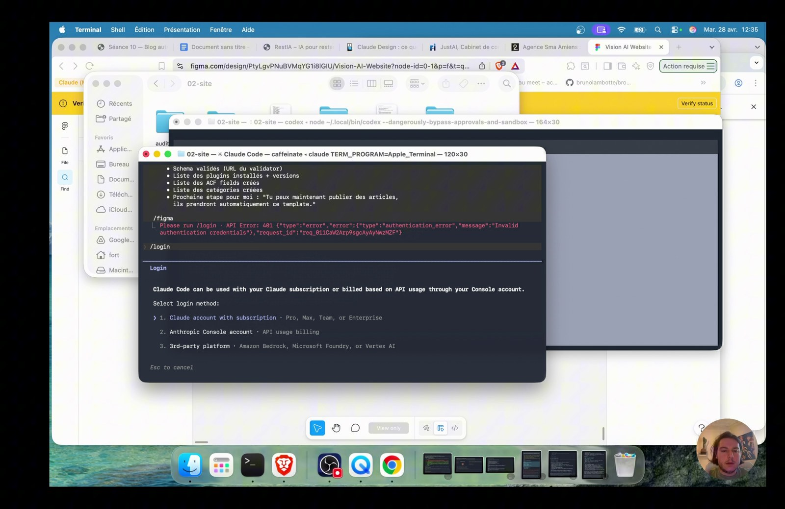
Je vérifie l'écran réel avant de passer à la suite.
Je peux expliquer ce que je vois et pourquoi je l'utilise.
Le titre doit porter le sujet
Sur un article, le H1 est central. Il sert au lecteur, au SEO et au modèle IA qui analysera la page. Je veux un titre clair, pas un titre vague comme Article test.
- Je prépare le contexte.
- Je lance une action courte.
- Je vérifie dans l'interface réelle.
- Je corrige uniquement ce qui bloque.
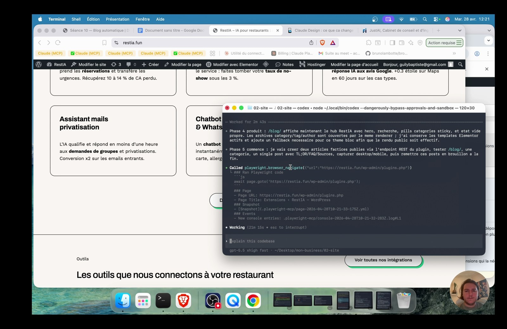
Le breadcrumb donne le contexte
Le fil d'Ariane aide le lecteur à comprendre où il est : Accueil > Blog > Catégorie > Article. Il aide aussi Google à comprendre la structure du site.
Je clarifie l'entrée de travail.
Je transforme l'idée en bloc exploitable.
Je regarde le résultat dans l'outil réel.
L'extrait n'est pas optionnel
L'extrait donne une phrase d'intention sous le titre. Il sert aussi aux cards d'archive. Si l'extrait est vide, WordPress peut prendre un bout de texte au hasard.
Si cette étape bloque, demande-toi : suis-je dans le bon dossier ? la bonne page ? le bon statut WordPress ? le bon écran public ?
L'image mise en avant
L'image mise en avant doit être choisie, pas laissée vide. Elle apparaît dans l'article, dans la card, parfois dans le partage social. Elle donne le premier signal visuel.
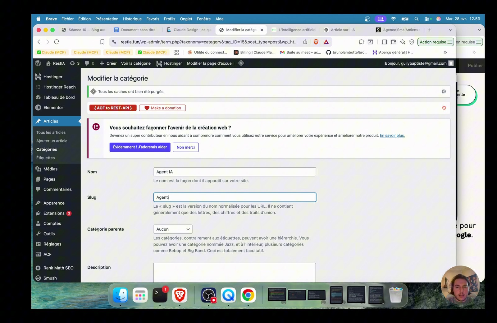
Je vérifie l'écran réel avant de passer à la suite.
Je peux expliquer ce que je vois et pourquoi je l'utilise.
La médiathèque
Je range les visuels dans la médiathèque WordPress. L'objectif n'est pas d'avoir une belle galerie. L'objectif est de pouvoir réutiliser les images au bon endroit, avec un alt propre.
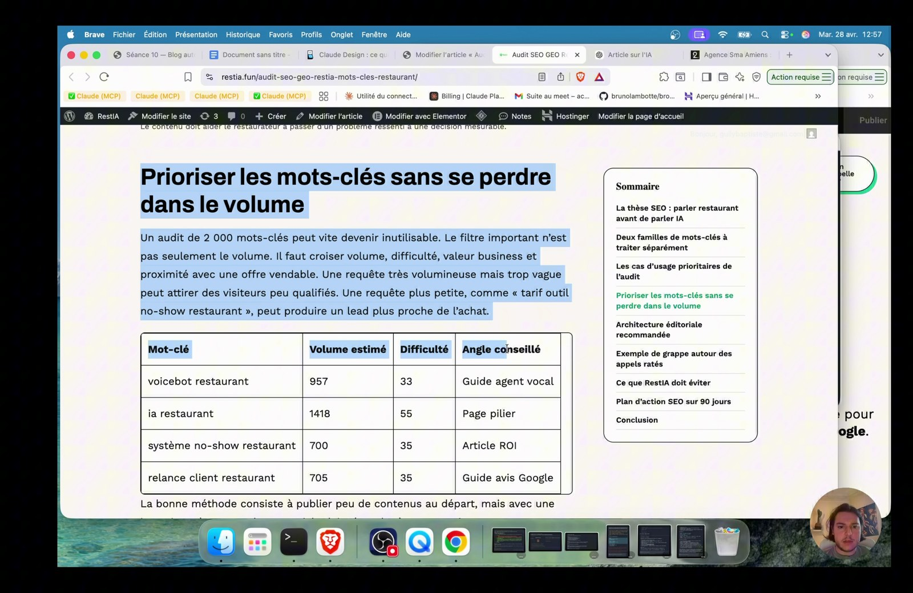
Je vérifie l'écran réel avant de passer à la suite.
Je peux expliquer ce que je vois et pourquoi je l'utilise.
Le contenu de l'article
Le corps de l'article doit avoir des H2, des paragraphes courts, des exemples, des tableaux si utile, et des callouts. Le template doit rendre tout ça lisible sans retoucher le design.
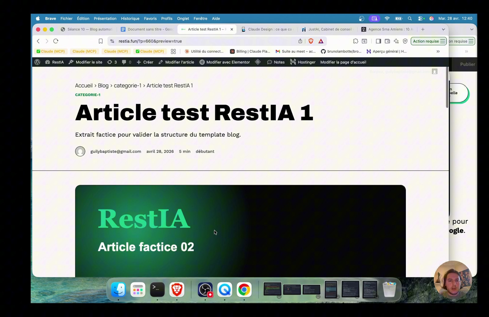
Je vérifie l'écran réel avant de passer à la suite.
Je peux expliquer ce que je vois et pourquoi je l'utilise.
Le sommaire
Le sommaire permet de naviguer dans un article long. Sur desktop, il peut rester à droite. Sur mobile, il doit se placer au-dessus ou disparaître proprement.
Je clarifie l'entrée de travail.
Je transforme l'idée en bloc exploitable.
Je regarde le résultat dans l'outil réel.
Les callouts
Je veux trois types de blocs : info, attention, conseil. Ils rendent l'article plus lisible et évitent les murs de texte. Codex peut les prévoir dans le CSS du template.
| Élément | Pourquoi je le garde | Comment tu vérifies |
|---|---|---|
| Structure | Elle évite que l'IA parte dans tous les sens. | Le résultat suit l'ordre prévu. |
| Business | Le blog doit servir le site, pas faire joli. | Chaque bloc mène vers une action utile. |
| Contrôle | Sans preuve, je ne valide pas. | Je regarde le site public et l'admin. |
La fin de l'article doit vendre sans forcer
Un article doit finir par une action logique : réserver un audit, lire une page service, télécharger un guide, demander un devis. Le CTA doit être lié au sujet, pas collé au hasard.
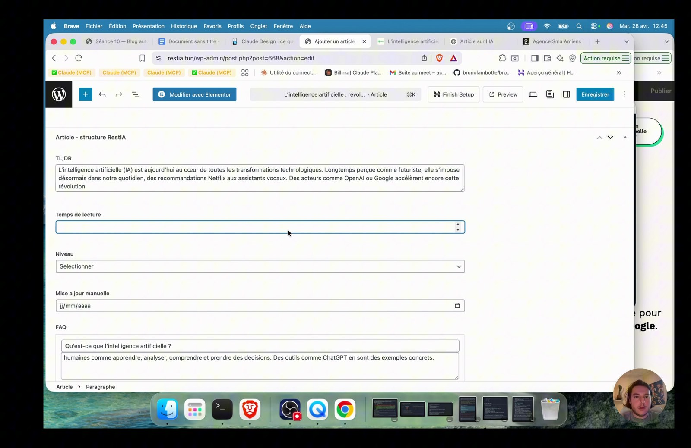
Je vérifie l'écran réel avant de passer à la suite.
Je peux expliquer ce que je vois et pourquoi je l'utilise.
Le partage social
Je garde LinkedIn, X et copier le lien. Sur un blog B2B, c'est souvent plus utile que de mettre dix réseaux sociaux qui ne seront jamais utilisés.
- Je prépare le contexte.
- Je lance une action courte.
- Je vérifie dans l'interface réelle.
- Je corrige uniquement ce qui bloque.
Le bloc auteur
Le bloc auteur rassure. Il montre qui écrit, quel est le rôle, et pourquoi la personne est crédible. C'est utile pour l'E-E-A-T et pour la lecture humaine.
Je clarifie l'entrée de travail.
Je transforme l'idée en bloc exploitable.
Je regarde le résultat dans l'outil réel.
Les articles liés
Les articles liés créent du maillage interne. Ils gardent le lecteur sur le site et aident Google à comprendre les groupes de sujets.
- Je prépare le contexte.
- Je lance une action courte.
- Je vérifie dans l'interface réelle.
- Je corrige uniquement ce qui bloque.
La FAQ
La FAQ répond aux questions simples que le lecteur se pose. Elle peut aussi nourrir le schema FAQPage si le site le gère proprement.
| Élément | Pourquoi je le garde | Comment tu vérifies |
|---|---|---|
| Structure | Elle évite que l'IA parte dans tous les sens. | Le résultat suit l'ordre prévu. |
| Business | Le blog doit servir le site, pas faire joli. | Chaque bloc mène vers une action utile. |
| Contrôle | Sans preuve, je ne valide pas. | Je regarde le site public et l'admin. |
Les sources
Les sources externes évitent de faire croire que tout sort de nulle part. Pour un article sérieux, je veux au moins quelques liens utiles, vérifiés, et pas seulement du texte généré.
Si tu vas trop vite ici, tu gagnes dix minutes maintenant et tu en perds une heure plus tard. Reviens toujours à une preuve simple.
Les champs ACF
Les champs ACF permettent de structurer l'article sans écrire du code à chaque fois. TL;DR, temps de lecture, niveau, date de mise à jour, FAQ, sources : tout devient plus propre.
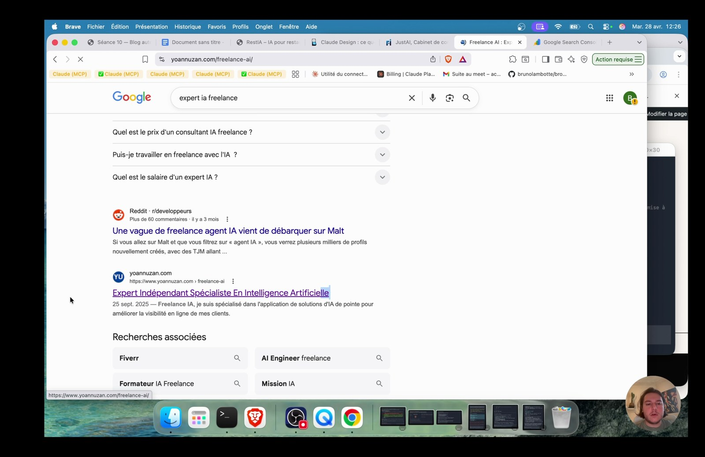
Je vérifie l'écran réel avant de passer à la suite.
Je peux expliquer ce que je vois et pourquoi je l'utilise.
Le TL;DR
Le TL;DR doit résumer l'article en deux ou trois lignes. C'est très utile pour le lecteur pressé. Je le place en haut de l'article pour qu'il comprenne vite l'intérêt.
- Je prépare le contexte.
- Je lance une action courte.
- Je vérifie dans l'interface réelle.
- Je corrige uniquement ce qui bloque.
Le temps de lecture
Le temps de lecture donne une attente. Si l'article est long, le lecteur sait dans quoi il s'engage. C'est simple, mais ça rend le blog plus professionnel.
Je clarifie l'entrée de travail.
Je transforme l'idée en bloc exploitable.
Je regarde le résultat dans l'outil réel.
Le niveau
Le champ niveau évite de mélanger les contenus débutants et avancés. Sur RestIA, un restaurateur doit savoir si l'article est accessible ou technique.
| Élément | Pourquoi je le garde | Comment tu vérifies |
|---|---|---|
| Structure | Elle évite que l'IA parte dans tous les sens. | Le résultat suit l'ordre prévu. |
| Business | Le blog doit servir le site, pas faire joli. | Chaque bloc mène vers une action utile. |
| Contrôle | Sans preuve, je ne valide pas. | Je regarde le site public et l'admin. |
La date de mise à jour
Un article IA vieillit vite. Je veux pouvoir montrer qu'un contenu a été revu. C'est utile pour la confiance et pour éviter les guides obsolètes.
Si tu vas trop vite ici, tu gagnes dix minutes maintenant et tu en perds une heure plus tard. Reviens toujours à une preuve simple.
Les permaliens
Je règle les permaliens sur Titre de la publication. Une URL comme /intelligence-artificielle-restaurant/ est plus claire que /?p=123.
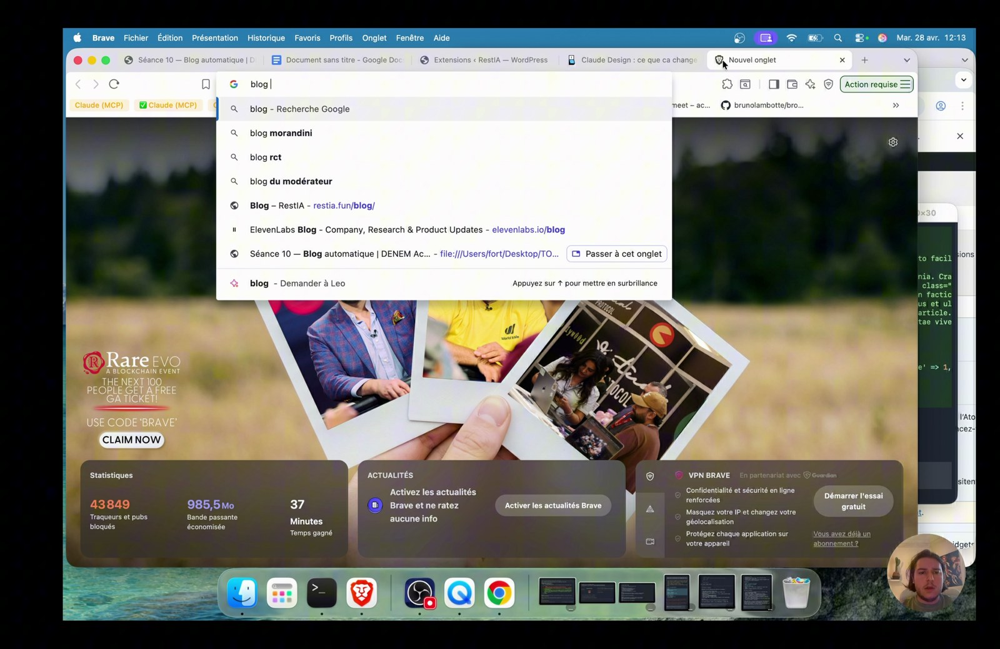
Je vérifie l'écran réel avant de passer à la suite.
Je peux expliquer ce que je vois et pourquoi je l'utilise.
Le slug
Le slug doit être court, lisible, sans accents, sans mots inutiles. Je ne laisse pas WordPress créer un slug trop long si le titre est long.
Si cette étape bloque, demande-toi : suis-je dans le bon dossier ? la bonne page ? le bon statut WordPress ? le bon écran public ?
Rank Math
Rank Math sert à gérer le SEO de base : title, meta description, sitemap, breadcrumbs, schema. Je ne l'utilise pas comme décoration. Il sert à contrôler le signal envoyé.
Je clarifie l'entrée de travail.
Je transforme l'idée en bloc exploitable.
Je regarde le résultat dans l'outil réel.
Smush ou compression image
Un blog peut devenir lourd si chaque image fait plusieurs Mo. Je compresse les images et je vérifie qu'elles chargent correctement.
- Je prépare le contexte.
- Je lance une action courte.
- Je vérifie dans l'interface réelle.
- Je corrige uniquement ce qui bloque.
ACF to REST API
Ce plugin peut aider si Codex doit lire ou remplir des champs personnalisés via l'API. Il rend les champs plus accessibles aux automatisations.
| Élément | Pourquoi je le garde | Comment tu vérifies |
|---|---|---|
| Structure | Elle évite que l'IA parte dans tous les sens. | Le résultat suit l'ordre prévu. |
| Business | Le blog doit servir le site, pas faire joli. | Chaque bloc mène vers une action utile. |
| Contrôle | Sans preuve, je ne valide pas. | Je regarde le site public et l'admin. |
Créer des articles factices
Avant de publier de vrais articles, je crée des brouillons ou des articles de test. Ils servent à vérifier les cards, les catégories, le single template et les champs.
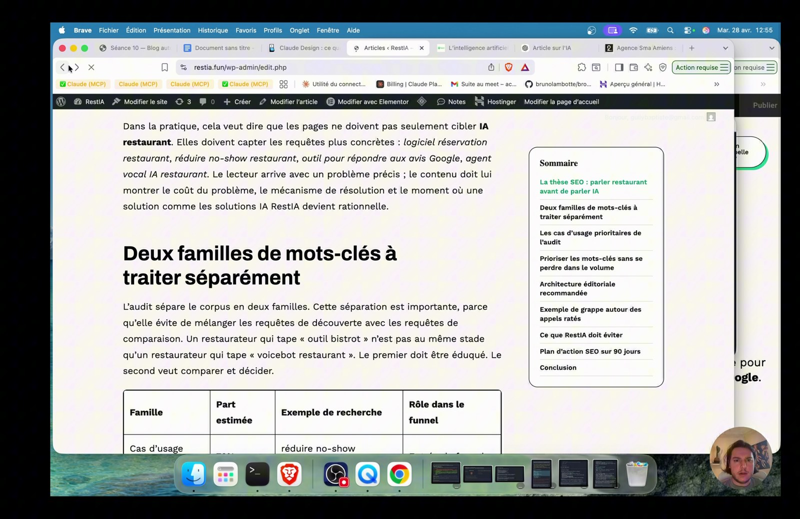
Je vérifie l'écran réel avant de passer à la suite.
Je peux expliquer ce que je vois et pourquoi je l'utilise.
Pourquoi je repasse les tests en brouillon
Un article factice ne doit pas rester public. Une fois la vérification terminée, je le remets en brouillon ou je le supprime. Le site public doit rester propre.
Si tu vas trop vite ici, tu gagnes dix minutes maintenant et tu en perds une heure plus tard. Reviens toujours à une preuve simple.
Créer un premier article réel
Une fois la structure prête, je peux créer un article réel. Dans la capture, le titre AGENT IA VISIO montre l'étape de démarrage : je pose le sujet, puis je remplis le contenu et les champs.
Je vérifie l'écran réel avant de passer à la suite.
Je peux expliquer ce que je vois et pourquoi je l'utilise.
Utiliser ChatGPT pour un test simple
Je peux demander à ChatGPT un article de test pour voir si le template fonctionne. Ce n'est pas encore une stratégie éditoriale complète. C'est juste un test d'affichage.
Il transforme une intention vague en tâche contrôlable. Tu peux le copier, remplacer les variables, puis vérifier le résultat.
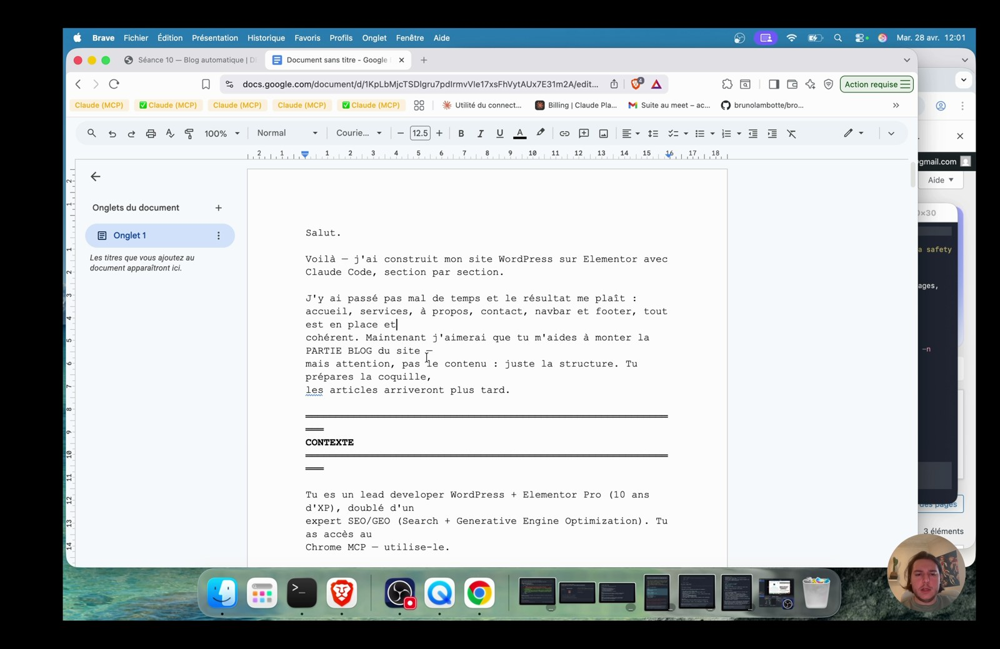
Fais-moi un article sur l'intelligence artificielle pour tester mon blog.
Je veux un contenu simple, clair, avec une introduction, des H2, des exemples, une FAQ courte et une conclusion.
Garde un style naturel. Le but est de voir si mon template WordPress affiche bien un article complet.Demander un article SEO plus long
Quand le template est prêt, je peux demander un article plus long avec des tableaux, des listes, des liens et des images. Le but est de tester la structure complète, pas de publier n'importe quoi.
Il transforme une intention vague en tâche contrôlable. Tu peux le copier, remplacer les variables, puis vérifier le résultat.
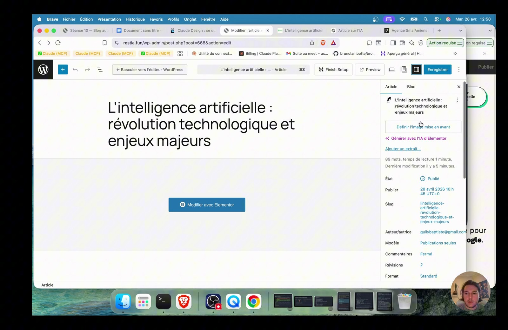
okay tu vas me faire un article seo assez long avec mon audit stp.
Ajoute des images, mets des tableaux, des listes a puces, des exemples et des liens internes / externes.
L'article doit faire environ 1400 mots.
Ne fais pas d'auto-correction globale.
Le but est de tester la structure que tu viens de construire.Importer proprement dans WordPress
Je ne colle pas juste un texte brut. Je demande à Codex de remplir le titre, la catégorie, les tags, les champs ACF, l'image mise en avant et la preview.
Il transforme une intention vague en tâche contrôlable. Tu peux le copier, remplacer les variables, puis vérifier le résultat.
Prends cet article et mets-le proprement dans WordPress.
Titre : [TITRE_ARTICLE]
Categorie : [CATEGORIE]
Tags : [TAGS]
Remplis les champs :
- TL;DR
- Temps de lecture
- Niveau
- FAQ
- Sources
- Date de mise a jour
Ajoute une image mise en avant depuis la mediathèque.
Publie seulement quand la preview est propre.La preview avant publication
Je vérifie la preview. Je regarde le titre, les espacements, l'image, le sommaire, la FAQ, le CTA et la sidebar. Si un élément casse, je corrige avant de publier.
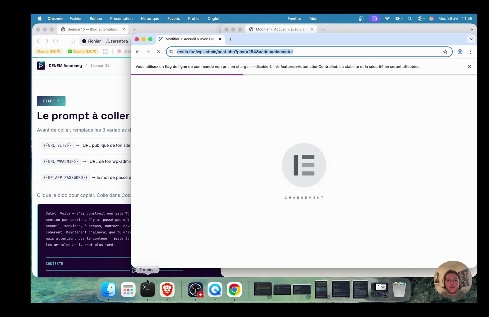
Je vérifie l'écran réel avant de passer à la suite.
Je peux expliquer ce que je vois et pourquoi je l'utilise.
La publication
Publier ne veut pas dire que le travail est fini. Après publication je rouvre la page publique, sans être dans l'admin, et je vérifie ce qu'un visiteur voit vraiment.
- Je prépare le contexte.
- Je lance une action courte.
- Je vérifie dans l'interface réelle.
- Je corrige uniquement ce qui bloque.
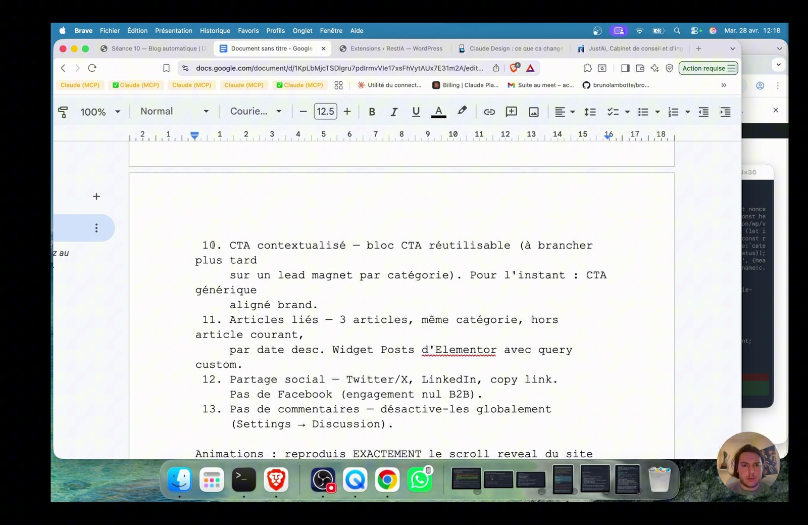
La liste des articles
La liste WordPress permet de contrôler les statuts : publié, brouillon, Elementor, auteur, catégorie, date. C'est mon tableau de bord éditorial.
Je vérifie l'écran réel avant de passer à la suite.
Je peux expliquer ce que je vois et pourquoi je l'utilise.
Les catégories dans l'admin
Je vérifie que les catégories sont propres. Si je vois Uncategorized ou categorie-1 partout, je corrige. Les catégories doivent parler au business.
Je vérifie l'écran réel avant de passer à la suite.
Je peux expliquer ce que je vois et pourquoi je l'utilise.
Les images d'article
Une image trop générique ne sert pas. Pour RestIA, l'image doit évoquer l'IA, le restaurant, l'automatisation ou le sujet exact de l'article.
Si cette étape bloque, demande-toi : suis-je dans le bon dossier ? la bonne page ? le bon statut WordPress ? le bon écran public ?
Les liens internes
Chaque article doit pointer vers au moins une page utile du site : solution, contact, audit, offre, autre article. Le blog doit soutenir le tunnel commercial.
| Élément | Pourquoi je le garde | Comment tu vérifies |
|---|---|---|
| Structure | Elle évite que l'IA parte dans tous les sens. | Le résultat suit l'ordre prévu. |
| Business | Le blog doit servir le site, pas faire joli. | Chaque bloc mène vers une action utile. |
| Contrôle | Sans preuve, je ne valide pas. | Je regarde le site public et l'admin. |
Les liens externes
Un lien externe doit apporter une preuve ou une ressource. Je ne mets pas des liens pour remplir. Je choisis des sources fiables et je les ouvre avant de les ajouter.
Si tu vas trop vite ici, tu gagnes dix minutes maintenant et tu en perds une heure plus tard. Reviens toujours à une preuve simple.
La sidebar
La sidebar doit rester utile : newsletter, articles récents, tags. Si elle alourdit la page, je la simplifie. Sur mobile elle doit passer sous le contenu.
Je clarifie l'entrée de travail.
Je transforme l'idée en bloc exploitable.
Je regarde le résultat dans l'outil réel.
Le style RestIA est marqué : bordures, gros titres, vert, contraste. Mais un article reste un article. La lisibilité passe avant l'effet visuel.
Le design ne doit pas casser le contenu
Je garde cette idée en tête pendant toute la séance : un blog utile se construit avec une méthode, pas avec une succession de clics.
Le test desktop
Je vérifie en grand écran : largeur du contenu, alignement du sommaire, cards de l'archive, header, footer, CTA. Rien ne doit flotter bizarrement.
Le test mobile
Je vérifie en 375px : titre, image, boutons, card, sidebar, tableau, prompt, CTA. Le texte ne doit pas sortir de l'écran.
Le test WordPress admin
Je vérifie aussi l'admin : les champs sont simples, les catégories existent, la médiathèque charge, l'image mise en avant se sélectionne, le bouton publier reste accessible.
Je vérifie l'écran réel avant de passer à la suite.
Je peux expliquer ce que je vois et pourquoi je l'utilise.
Le rapport final
Je demande à Codex de me dire ce qu'il a créé, ce qu'il a vérifié, les fichiers, les plugins, les scores et les points à surveiller. Un rapport évite de perdre la trace du travail.
Il transforme une intention vague en tâche contrôlable. Tu peux le copier, remplacer les variables, puis vérifier le résultat.
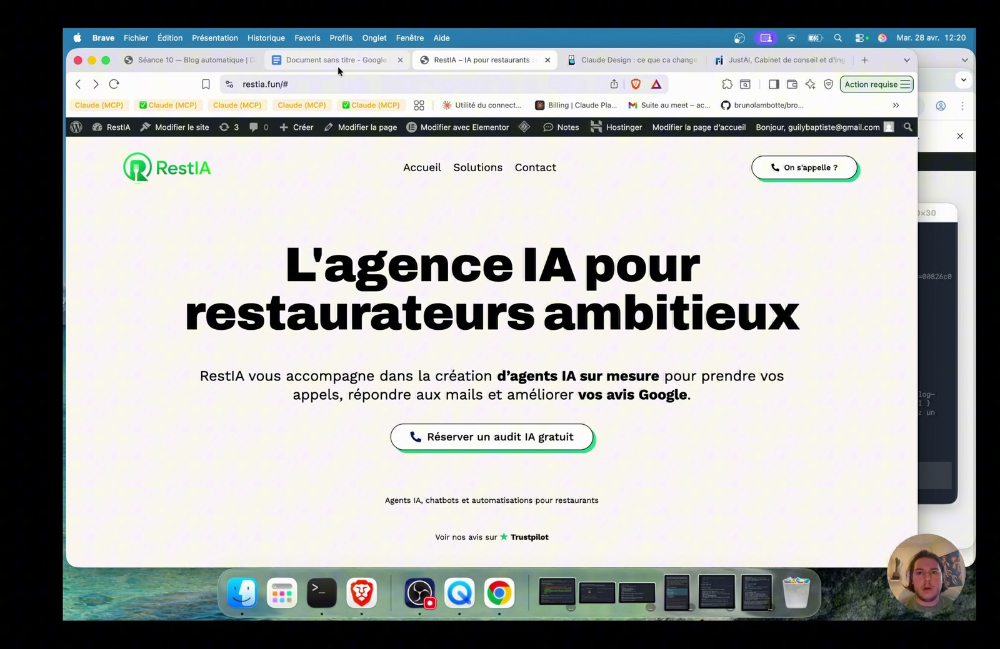
Controle la page /blog/ et le single post.
Verifie desktop, tablette et mobile.
Verifie que les titres ne debordent pas, que les cards ont la meme hauteur, que la sidebar ne casse pas, que les images chargent, que le slug est propre et que l'article est bien publie.
Donne-moi une liste courte : OK, a corriger, correction faite.Ce que je garde dans mon QG
Je garde les prompts, les URLs utiles, les décisions, les catégories, les champs ACF et les corrections. Ce support sert à refaire la séance sans repartir de zéro.
- Je prépare le contexte.
- Je lance une action courte.
- Je vérifie dans l'interface réelle.
- Je corrige uniquement ce qui bloque.
Ce qu'il ne faut pas déléguer aveuglément
Je ne délègue pas le jugement éditorial. Codex peut construire, importer, tester. Mais je dois valider si le sujet est utile, si le ton est bon, si l'article sert vraiment mon business.
Si tu vas trop vite ici, tu gagnes dix minutes maintenant et tu en perds une heure plus tard. Reviens toujours à une preuve simple.
La différence entre contenu test et contenu stratégie
Un article de test sert à vérifier l'affichage. Un article stratégique sert à capter des leads. Ne mélange pas les deux. Tant que la structure n'est pas validée, le contenu n'est qu'un test.
Une demande floue, un site qui peut casser, et un agent qui improvise.
Un chemin clair : contexte, prompt, exécution, contrôle, correction.
La suite logique
Après cette séance, tu peux automatiser la création d'articles : plan éditorial, sources, rédaction, images, publication, contrôle qualité. Mais cette automatisation vaut seulement si le blog est propre.
Mini checklist avant de passer à l'automatisation
Je valide : /blog/ charge, un article s'affiche, les catégories sont propres, les champs se remplissent, l'image apparaît, le slug est bon, le mobile passe, les articles test ne polluent pas le site.
Ce que tu dois retenir
Le blog automatique commence par une structure propre. Si la structure est bonne, l'IA peut publier à grande échelle. Si la structure est mauvaise, l'IA publie vite un mauvais système.
Plan de répétition
Refais la séance une fois sur un site de test. Puis refais-la sur ton vrai projet. Plus tu répètes cette méthode, plus tu sais guider Codex sans sur-expliquer.
- Je prépare le contexte.
- Je lance une action courte.
- Je vérifie dans l'interface réelle.
- Je corrige uniquement ce qui bloque.
La compétence business
Tu peux vendre cette compétence : créer un blog WordPress prêt pour la publication IA, avec template, champs, SEO, catégories, système d'article et contrôle qualité.
Je clarifie l'entrée de travail.
Je transforme l'idée en bloc exploitable.
Je regarde le résultat dans l'outil réel.
Le dernier contrôle
Avant de dire que c'est terminé, j'ouvre le site public, je clique sur Blog, je clique sur un article, je reviens à l'archive, je teste mobile, puis je note les corrections.
Je vérifie l'écran réel avant de passer à la suite.
Je peux expliquer ce que je vois et pourquoi je l'utilise.
Pourquoi je parle déjà de VPS
À la fin je prépare la suite : pour automatiser vraiment la publication, il faudra un endroit qui tourne tout seul. C'est le rôle du VPS. Le site WordPress reçoit les articles, mais le système qui les fabrique peut vivre ailleurs.
- Je prépare le contexte.
- Je lance une action courte.
- Je vérifie dans l'interface réelle.
- Je corrige uniquement ce qui bloque.
Pourquoi les API arrivent après
Les API servent à brancher les modèles, récupérer des données, générer du contenu, créer des images, pousser dans WordPress et contrôler le résultat. Je n'attaque pas ça tant que le blog n'est pas propre, parce que l'automatisation amplifierait les défauts.
Fin de séance
À la fin, je n'ai pas seulement un blog. J'ai une base réutilisable. Chaque futur article aura une structure, des champs, un slug, une image, une catégorie et une logique business.